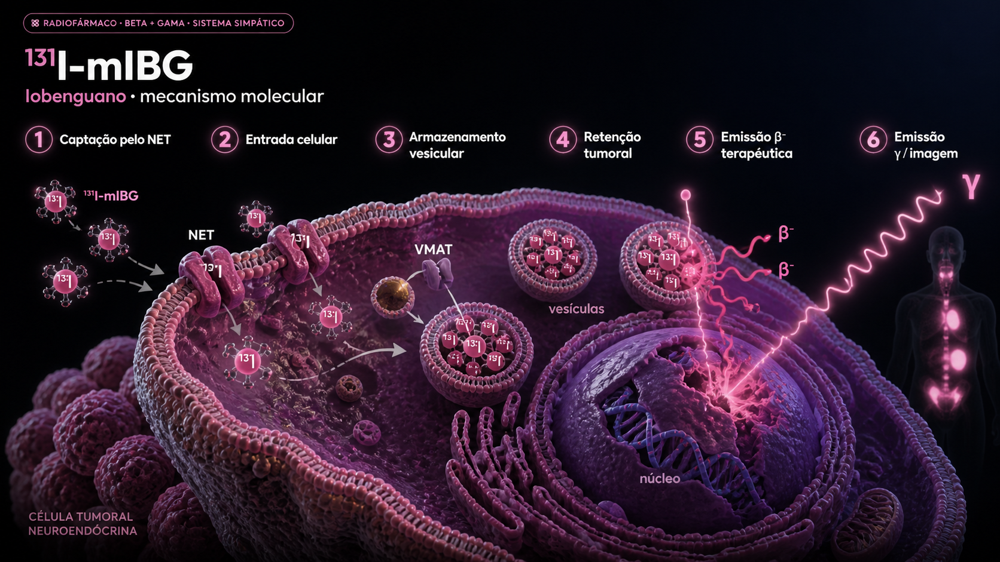

01 Cronologia
Da síntese pioneira de Wieland & Beierwaltes (1980) à aprovação Azedra (2018) e às combinações modernas com epigenética e imunoterapia: 45 anos de evolução em pediatria oncológica e endocrinologia.
Síntese do MIBG · Wieland & Beierwaltes
Donald Wieland e William Beierwaltes na Universidade de Michigan sintetizam o 123I-MIBG e 131I-MIBG, buscando análogos da noradrenalina captados pelas células cromafins da medula adrenal. Estrutura: meta-iodo-benzilguanidina — combina anel benzeno com carga radioiodada e cadeia guanidínica.
Primeiras imagens em feocromocitoma · Sisson
Sisson, Wieland, Beierwaltes e cols. publicam as primeiras imagens diagnósticas de feocromocitoma com 131I-MIBG (NEJM 1981). Marca o nascimento da imagem molecular catecolaminérgica.
Primeiro uso terapêutico · Hoefnagel
Cornelis (Kees) Hoefnagel (Holanda) trata o primeiro paciente com PPGL maligno usando 131I-MIBG em altas atividades. Resposta sintomática e bioquímica notável. Início do conceito teranóstico moderno.
Adoção em neuroblastoma pediátrico
Grupos europeus e americanos passam a usar 131I-MIBG em neuroblastoma alto-risco refratário/recidivado. Esquemas iniciais empíricos: 18 mCi/kg em dose única. Resposta objetiva 30-40% em situação refratária.
Padronização e dose-escalada
Refinamento dos esquemas: 18 mCi/kg dose única vs 12+12 mCi/kg fracionado vs dose ablativa com resgate de células-tronco. Studies do Children's Oncology Group (COG) e SIOPEN europeu definem protocolos.
Aprovação FDA do Azedra (Iobenguano I-131)
FDA aprova o Azedra — formulação comercial no-carrier-added do 131I-MIBG (atividade específica muito maior, sem MIBG frio competidor) — para PPGL maligno irressecável que requer terapia sistêmica. Base no estudo Phase II de Pryma e cols. (J Clin Oncol 2019).
NANT, MiNivAN, combinações epigenéticas e imuno
New Approaches to Neuroblastoma Therapy (NANT) testa MIBG + vorinostat (HDAC inhibitor — aumenta expressão NET). O MiNivAN (SIOPEN) combina 131I-MIBG + nivolumab + dinutuximab beta em neuroblastoma recidivado/refratário; VERITAS (SIOPEN) randomiza MIBG vs busulfano-melfalano em recidiva.
MIBG vs DOTATATE em PPGL
Discussão clínica atual: em PPGL com captação dual (NET + SSTR2), Lu-DOTATATE pode ser preferido pela menor logística (sem internação radiometabólica) e melhor perfil hematológico. MIBG mantém papel em tumores NET+/SSTR− e em neuroblastoma.
02 Mecanismo molecular
O MIBG é estruturalmente similar à noradrenalina e usa a mesma porta de entrada celular: o transportador de noradrenalina (NET / hNET / SLC6A2). Uma vez dentro da célula, é armazenado em vesículas catecolaminérgicas via VMAT (transportador vesicular de monoaminas).

Captação pelo NET
O 131I-mIBG é um análogo funcional da noradrenalina e é reconhecido pelo transportador de noradrenalina (NET), expresso na membrana de células tumorais derivadas do sistema simpático/neuroendócrino.
Entrada celular
Após o reconhecimento pelo NET, o radiofármaco é transportado para o interior da célula tumoral por mecanismo ativo de captação, semelhante ao utilizado pelas catecolaminas.
Armazenamento vesicular
No citoplasma, parte do 131I-mIBG é direcionada para vesículas ou grânulos neurosecretórios, com participação do transporte vesicular associado ao fenótipo catecolaminérgico, incluindo o VMAT.
Retenção tumoral
A permanência intracelular e vesicular do radiofármaco favorece a retenção seletiva em tumores com expressão funcional do NET, como neuroblastoma, feocromocitoma e paraganglioma.
Emissão β⁻ terapêutica
O 131I emite partículas beta menos, que depositam energia em curto alcance no tecido tumoral, promovendo dano celular e lesão do DNA nas células que concentraram o radiofármaco.
Emissão γ / imagem
Além da emissão β⁻ terapêutica, o 131I também emite fótons gama, permitindo cintilografia ou SPECT para avaliar a distribuição do radiofármaco, confirmar captação tumoral e documentar a biodistribuição pós-terapia.
O MIBG tradicional (compounding) tem MIBG frio em concentração relativamente alta (carrier), competindo com o radioativo pelos sítios NET. O Azedra é produzido sem carrier — atividade específica até 100× maior — o que melhora captação tumoral, especialmente em pacientes com massa tumoral pequena ou expressão NET reduzida. Efeito clínico: maior eficácia em PPGL com tumores menores.
03 Esquema terapêutico
Diferentemente de Lu-PSMA / Lu-DOTATATE / Ra-223, o MIBG exige internação em quarto blindado por 4-7 dias devido à alta atividade administrada e à radiação γ de 364 keV. Esquema varia por indicação (PPGL adulto vs neuroblastoma pediátrico).
PPGL maligno (Azedra · adulto)
Neuroblastoma alto-risco (pediatria)
04 Bloqueio tireoidiano · obrigatório
Iodo-131 livre liberado do MIBG é avidamente captado pela tireoide via simporter sódio-iodeto (NIS). Sem bloqueio, a dose tireoidiana ultrapassa 20-30 Gy por sessão — risco quase certo de hipotireoidismo permanente e, em adolescentes/jovens, risco oncogênico aumentado.
Mesmo com bloqueio adequado, hipotireoidismo subclínico ocorre em 5-15% dos pacientes adultos e até 30% das crianças tratadas com MIBG. Avaliação de TSH/T4 livre semestral por pelo menos 5 anos é recomendada. Em sobreviventes pediátricos de neuroblastoma, surveillance estendida (incluindo crescimento e desenvolvimento) é mandatória.
05 Imagem teranóstica · Curie e SIOPEN scores
A imagem MIBG diagnóstica é mandatória antes da terapia — apenas pacientes com captação demonstrada são candidatos. Sistemas de scoring quantitativo (Curie / SIOPEN) são padrão para monitorar resposta no neuroblastoma.
Sistema de Matthay e cols. (1995): divide o esqueleto em 9 segmentos + tecidos moles. Cada sítio recebe score 0 (sem captação), 1 (1 lesão), 2 (>1 lesão pequena), 3 (lesão grande). Soma total = score Curie. Reduções de pelo menos 50% após terapia indicam resposta. SIOPEN score (12 segmentos esqueléticos) é variante europeia mais granular. Ambos são reprodutíveis e mantêm valor prognóstico mesmo na era pós-imunoterapia.
06 Ensaios pivotais
Aprovação Azedra em PPGL maligno (2018), papel histórico em neuroblastoma alto-risco e estudos modernos de combinação com epigenética e imuno.
PPGL maligno · n=68 · Pryma e cols. · Iobenguano I-131 (no-carrier-added)
Base regulatória do Azedra. Primeiro radiofármaco aprovado especificamente para PPGL maligno.
Neuroblastoma alto-risco recidivado · n=99 · MIBG ± vorinostat
Vorinostat aumenta NET expression. Combinação racional, sinal positivo a confirmar.
Neuroblastoma alto-risco recidivado · MIBG vs busulfan/melfalan · cooperative
Comparação direta MIBG vs QT mieloablativa em recidiva. Estudo definidor.
Neuroblastoma alto-risco · 1L · indução com MIBG no esquema multimodal
Posicionamento do MIBG na primeira linha do neuroblastoma alto-risco. Definição de papel.
PPGL metastático progressivo · n=11 · pembrolizumab monoterapia (MD Anderson)
Imunoterapia isolada com atividade modesta em PPGL (ORR 9%), mas controle de doença em parte dos pacientes e sem crise catecolaminérgica. Opção sistêmica exploratória, distinta do MIBG.
PPGL maligno · comparações observacionais · n variável
Em PPGL com captação dual, Lu-DOTATATE tem ganhado preferência. MIBG mantém papel em NET+/SSTR−.
PPGL maligno e neuroblastoma · > 350 pacientes · NKI Amsterdam
Maior experiência mundial com MIBG terapêutico. Base prática que inspirou registros e ensaios fase 2/3.
07 Dosimetria
Dose para tumor é alta e heterogênea (depende de captação NET). Bexiga é o órgão mais irradiado pela excreção urinária. Tireoide bloqueada recebe pouca dose; sem bloqueio, é o órgão crítico.
| Órgão / tecido | Dose por MBq (mGy/MBq) | Visualização | Observação |
|---|---|---|---|
| Tumor (mediana) | variável · 5-50 Gy/dose | Heterogeneidade alta | |
| Bexiga (parede) | ~ 0,18 | Excreção urinária · hidratação reduz | |
| Glândulas salivares | ~ 0,07 | Captação NET intrínseca | |
| Coração | ~ 0,07 | Inervação simpática miocárdica | |
| Fígado | ~ 0,07 | Metabolismo hepático | |
| Medula vermelha | ~ 0,07 | Citopenia é dose-limitante | |
| Tireoide (com bloqueio) | ~ 0,01 | KI/Lugol mandatório | |
| Tireoide (sem bloqueio) | ~ 1,5 — 3,0 | Hipotireoidismo quase certo |
Em neuroblastoma alto-risco com extensa carga óssea, a dose absorvida na medula pode atingir 2-3 Gy por sessão de MIBG terapêutico — limítrofe com toxicidade hematológica. Dose ablativa (>500 mCi total cumulativo) requer resgate de células-tronco hematopoiéticas autólogas. Centros de pediatria oncológica que oferecem MIBG terapêutico devem ter banco de stem cells e UTI pediátrica disponíveis.
08 Eventos adversos
Hematológica é dose-limitante (especialmente em neuroblastoma com doses altas). Hipotireoidismo é a sequela tardia mais frequente. Crise hipertensiva é raro mas grave em PPGL não bloqueado.
Em pacientes com PPGL funcionante, bloqueio alfa-adrenérgico (fenoxibenzamina, doxazosina) por 10-14 dias antes do MIBG é mandatório. A liberação de catecolaminas pelo dano celular induzido pela radiação pode precipitar crise hipertensiva. Beta-bloqueador só após bloqueio alfa estabelecido. Hidratação EV abundante peri-procedimento.
09 Perspectivas
A frente MIBG caminha em três direções: aumentar expressão NET com epigenética, combinar com imunoterapia em PPGL, e migrar para alfa-emissores no longo prazo.
Em 2026, MIBG terapêutico mantém papel definitivo em (1) neuroblastoma alto-risco refratário/recidivado com captação MIBG positiva, (2) PPGL maligno com captação MIBG dominante e SSTR− ou variável, e (3) cenários de combinação (epigenética, imuno) em centros de pesquisa. Perdeu espaço para Lu-DOTATATE em PPGL com SSTR alta, especialmente em centros sem infraestrutura de internação radiometabólica prolongada.